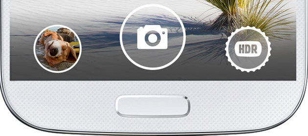
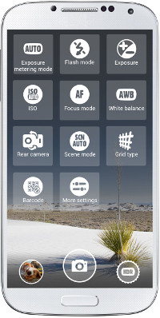
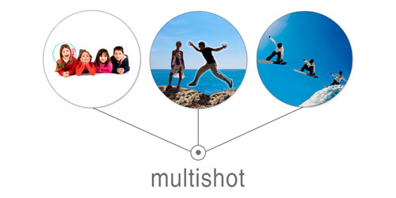
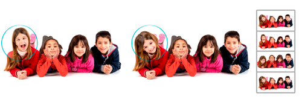
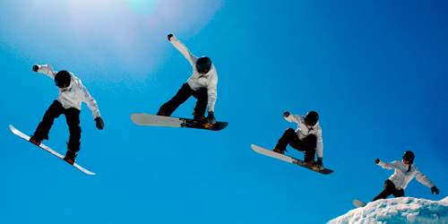
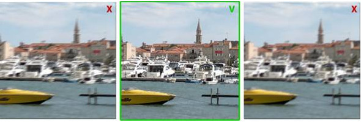

ABC provides wide range of modes and access to all settings your camera supports.
If you long press any of the quick settings on the top bar you'll get a dropdown list to select and change controls to any setting you like
Swipe main screen left/right to see more or less info on the screen - histogram, grids, info controls, top quick settings menu
Pull down top menu to see all quick settings

Left control - fast access to your latest image in the gallery/editor.
Center control - shutter to start/stop capture.
Right control - mode selection.
Top menu shows fast controls. Pull it down to see all quick controls:

Scenes, white balance, ISO, flash, focus, exposure metering and more!
Select "more settings" to get access to all settings - general, viewfinder, capture and processing modes, export.
When in settings - you will find different sections to access all application settings:
Access to all image sizes in any mode - general image size, multishot and night image size, panorama height, video resolution.
+ volume button and headset button settings, quality settings and much more!
Settings in this section allow to configure controls on main screen and manage screen behavior.
You can add/hide self timer, auto exposure and white balance locks, zoom control or add different useful info controls
Settings in this section allow to configure all parameters of capture and processing for all modes.
Allow to set saving options - storage location, format, gps tags.

Shoot regular still image.
DRO option (Dynamic Range Optimization) - Almalence's new technology makes camera see like human eye. Extremely fast solution that automatically improves the images in 100% cases and can substitute HDR in most cases.
Shoot series of regular still images.
Shoot series of regular still images with different exposure.
The HDR technique allows you to capture details in bright and dark areas and have them merged in a single photo.
Capture high quality images in low light. Use your mobile camera everywhere, in any conditions, no matter how dark it is.
Captures video with different resolutions. Also ABC video mode has such great features as :
- HDR video (available on devices with Android 4.3 and higher)
- Pause
- Time lapse
Negative shutter lag - keeps taking the images UNTIL you tap the shutter. After clicking the shutter button you have a series of photos taken before the click. You can then pick the photos where the moment is captured.

Takes series of images and provides selection of processing method.


Shoot and remove unwanted moving objects - cars, people etc.

Shoot group of your friends and select best faces!

Shoot an action and combine images into one sequence shot!
High definition and fast panoramas!

Take up to 360 degrees and up to 100MPix HD panoramas!

Analyzing series of shots, Best Shot chooses the best one, increasing the chances of having a blur free image. Best shot will automatically select the best one and save it.